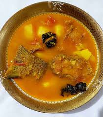

Fish Tenga

Description
Fish Tenga is a hallmark dish from Assam, Northeast India, known for its tangy and light fish curry. This
refreshing dish, often enjoyed in summer, features a sour flavor from ingredients like elephant apple or lemon,
paired with aromatic spices, making it a staple served with white rice.
ingredients
- Fresh Fish: 500g, preferably rohu or other freshwater fish, cut into pieces.
- Elephant Apple (Ou Tenga): 1 small, sliced, or substitute with lemon juice or tomatoes.
- Mustard Oil: 3-4 tbsp for frying and cooking.
- Spices: 1 tsp turmeric, 1 tsp black mustard seeds, 1-2 green chilies, and salt to taste.
- Aromatics: 1 small onion (finely chopped), 1 tsp ginger paste, and fresh coriander for garnish.
Steps to Cook
- Marinate Fish: Clean fish pieces, rub with ½ tsp turmeric and a pinch of salt, and set
aside for 10 minutes.
- Fry Fish: Heat 2 tbsp mustard oil in a pan, lightly fry fish until golden on both sides,
and set aside.
- Prepare Base: In the same pan, add 1-2 tbsp more oil, heat, and add mustard seeds until
they splutter.
- Cook Aromatics: Add chopped onion, ginger paste, green chilies, and remaining turmeric;
sauté until onions
are soft.
- Simmer Curry: Add sliced elephant apple (or lemon juice/tomatoes), 1-2 cups water, and
salt; simmer for 10 minutes, then add fried fish and cook for 5-7 minutes until flavors meld. Garnish with
coriander.
Home